Una prueba de hipótesis es un procedimiento de inferencia estadística que utiliza una muestra para evaluar una afirmación acerca de uno o varios parámetros poblacionales. Este documento presenta pruebas para medias, proporciones, varianzas y diferencias entre grupos, junto con herramientas gráficas y analíticas para examinar sus supuestos.
1.1 Objetivos de aprendizaje
Al terminar, el lector podrá:
Formular hipótesis nulas y alternativas bilaterales o unilaterales.
Seleccionar un estadístico de prueba según el parámetro y el diseño muestral.
Examinar normalidad, valores atípicos e igualdad de varianzas cuando corresponda.
Ejecutar pruebas de hipótesis en R e interpretar el valor p y los intervalos de confianza.
Redactar conclusiones estadísticas sin confundir significación estadística con importancia práctica.
2 .Conceptos generales
2.1 .Hipótesis nula y alternativa
La hipótesis nula (H_0) representa el valor de referencia que se contrasta. La hipótesis alternativa (H_1) representa la diferencia o dirección que interesa detectar.
Tipo
Forma general
Ejemplo
Bilateral
H_1:\theta\ne\theta_0
El promedio es diferente de 70
Cola derecha
H_1:\theta>\theta_0
El promedio supera 70
Cola izquierda
H_1:\theta<\theta_0
El promedio es menor que 70
Por ejemplo, para contrastar si el puntaje medio de una evaluación es diferente de 70:
H_0:\mu=70,\qquad H_1:\mu\ne70.
2.2 .Nivel de significación, errores y potencia
El nivel de significación \alpha es la probabilidad de cometer un error tipo I bajo H_0. Los valores habituales son 0.10, 0.05 y 0.01.
Error tipo I: rechazar H_0 siendo verdadera.
Error tipo II: no rechazar H_0 siendo falsa.
Potencia: probabilidad de rechazar H_0 cuando una alternativa determinada es verdadera.
No rechazar H_0 no demuestra que sea verdadera; indica que la evidencia muestral no basta para rechazarla al nivel seleccionado.
2.3 .Flujo de trabajo
Definir el parámetro y el diseño de muestreo.
Formular H_0, H_1 y \alpha antes de observar los resultados.
Revisar independencia, calidad de datos y supuestos relevantes.
Calcular el estadístico y el valor p.
Informar estimación, intervalo de confianza, estadístico, grados de libertad cuando proceda, valor p y conclusión contextual.
Evaluar la importancia práctica del efecto, no solo su significación estadística.
3 .Exploración gráfica y evaluación de supuestos
Las pruebas de normalidad son relevantes sobre todo para inferencias exactas en muestras pequeñas sobre medias y varianzas. No se exige que todas las variables del estudio sean normales. En pruebas de medias, lo que importa es la distribución de la variable dentro de cada grupo o, en un diseño pareado, la distribución de las diferencias.
3.1 .Datos de ejemplo
Los datos siguientes son simulados para fines didácticos. Se pueden reproducir en R.
Ver código
set.seed(2026)puntaje <-round(rnorm(30, mean =72, sd =8), 1)grupo <-factor(rep(c("Método A", "Método B"), each =15))calificacion <-c(round(rnorm(15, mean =70, sd =7), 1),round(rnorm(15, mean =75, sd =8), 1))datos <-data.frame(grupo, calificacion)head(datos)
grupo calificacion
1 Método A 66.3
2 Método A 71.2
3 Método A 68.2
4 Método A 72.3
5 Método A 71.3
6 Método A 78.2
Ver código
summary(puntaje)
Min. 1st Qu. Median Mean 3rd Qu. Max.
51.60 66.33 71.00 71.42 76.72 87.30
3.2 .Histograma y curva normal
El histograma permite examinar la forma de la distribución: simetría, asimetría, multimodalidad y observaciones extremas. La curva normal superpuesta es orientativa, no una prueba formal.
Ver código
hist(puntaje, probability =TRUE,main ="Distribución de puntajes",xlab ="Puntaje", col ="grey85", border ="white")curve(dnorm(x, mean =mean(puntaje), sd =sd(puntaje)),add =TRUE, lwd =2)
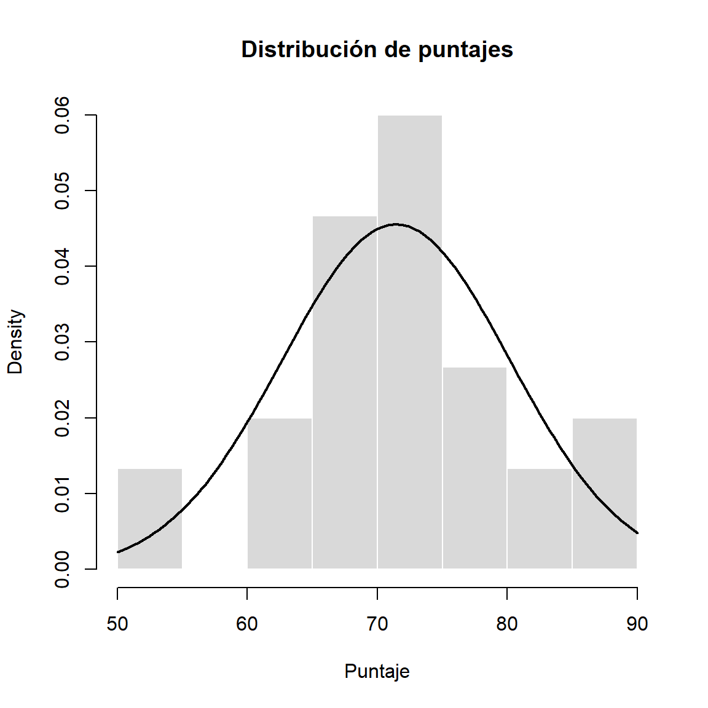
3.3 .Diagrama de caja (boxplot)
El boxplot resume la mediana, los cuartiles y posibles observaciones atípicas. Un punto marcado como atípico no debe eliminarse automáticamente: primero se verifica si es un error, un caso válido o una observación influyente.
Ver código
boxplot(puntaje, horizontal =TRUE,main ="Boxplot de puntajes", xlab ="Puntaje",col ="grey85")
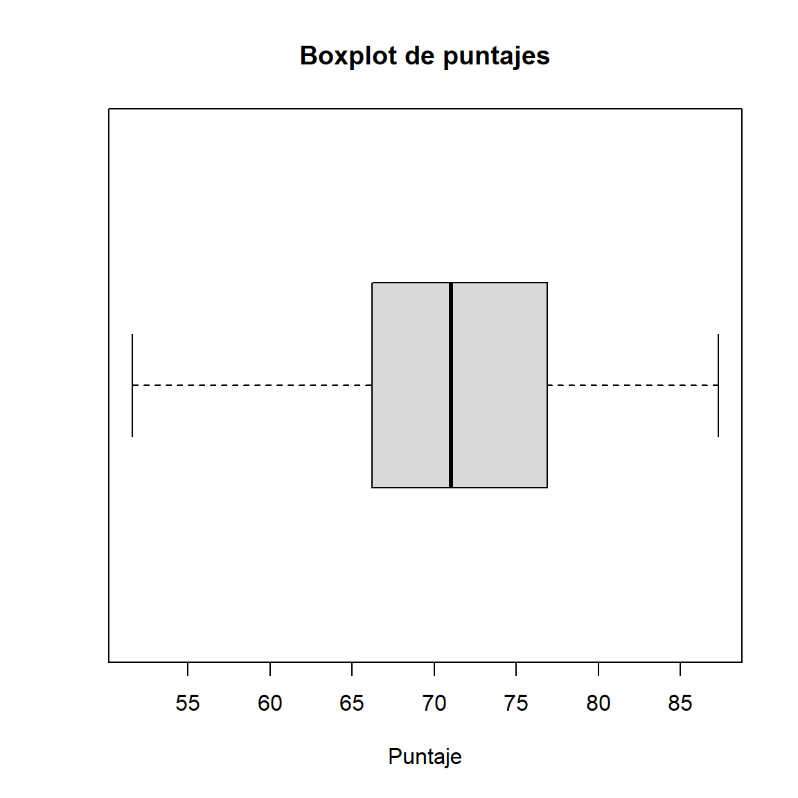
Comparación por grupo:
Ver código
boxplot(calificacion ~ grupo, data = datos,main ="Calificaciones por método",xlab ="Método", ylab ="Calificación",col =c("grey85", "grey70"))
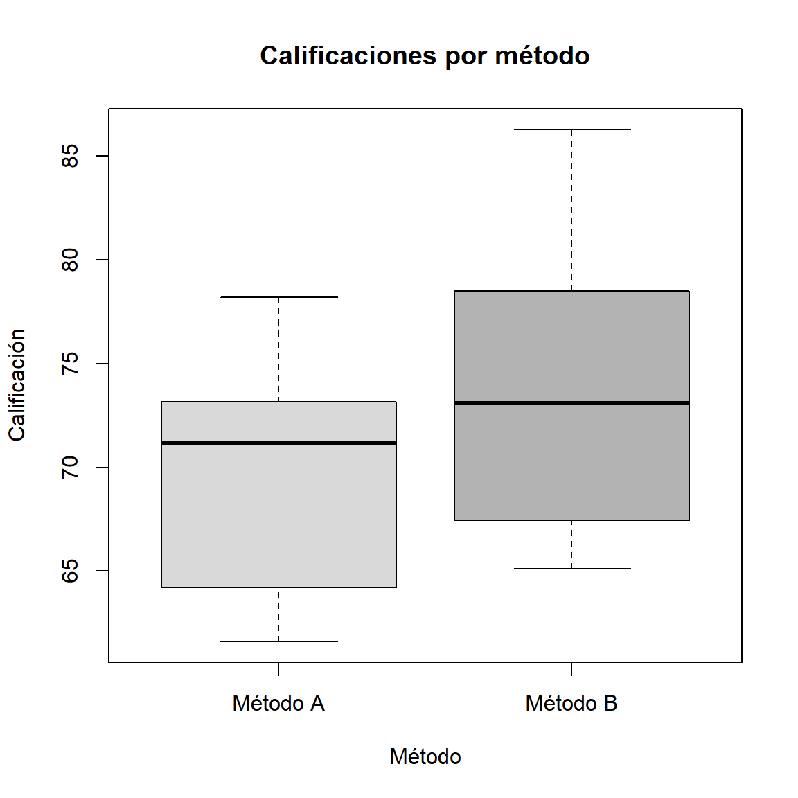
3.4 .Gráfico Q-Q normal
El gráfico Q-Q compara los cuantiles observados con los cuantiles teóricos de una distribución normal. Los puntos aproximadamente alineados apoyan la plausibilidad de normalidad; curvaturas sistemáticas, colas alejadas o puntos extremos sugieren desviaciones.
Ver código
qqnorm(puntaje, main ="Gráfico Q-Q normal")qqline(puntaje, col ="red", lwd =2)
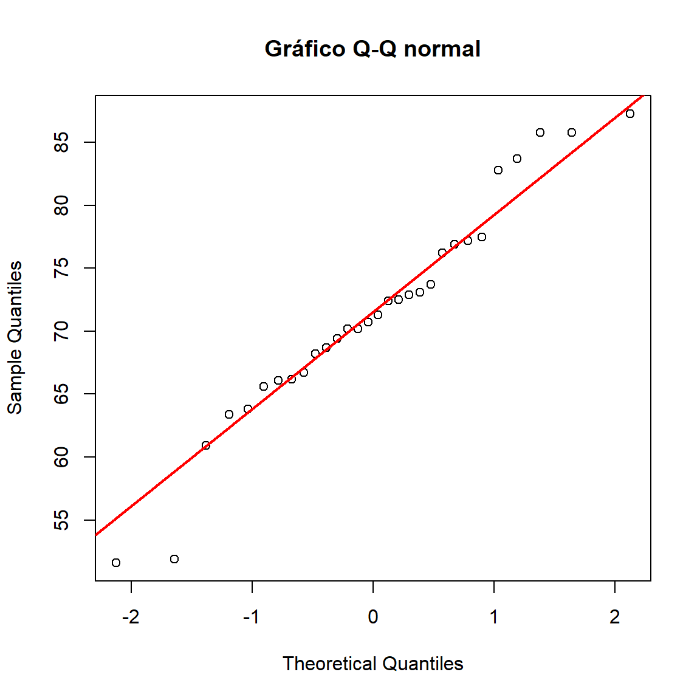
3.5 .Prueba de Shapiro-Wilk
Hipótesis:
H_0:\text{los datos son compatibles con una distribución normal}
H_1:\text{los datos no son compatibles con una distribución normal}.
Ver código
shapiro.test(puntaje)
Shapiro-Wilk normality test
data: puntaje
W = 0.96085, p-value = 0.3256
Interpretación: si p<\alpha, se rechaza la hipótesis de normalidad. Si p\geq\alpha, no se rechaza; esto no prueba que los datos sean normales. La prueba puede detectar desviaciones pequeñas con muestras grandes y tener poca potencia con muestras pequeñas. Debe combinarse con histograma, Q-Q plot, contexto y tamaño muestral.
3.6 .Gráficos diagnósticos con ggplot2
Para obtener gráficos consistentes y personalizables, se utilizará ggplot2. En esta sección se construyen histogramas con curva normal, boxplots y gráficos Q-Q normales. Los Q-Q plots se implementan con stat_qq() y stat_qq_line().
Ver código
# Instalar una sola vez si no tiene ggplot2:# install.packages("ggplot2")library(ggplot2)datos_puntaje <-data.frame(puntaje = puntaje)# Histograma con densidad normal teóricaggplot(datos_puntaje, aes(x = puntaje)) +geom_histogram(aes(y =after_stat(density)),bins =10, fill ="grey80", color ="white") +stat_function(fun = dnorm,args =list(mean =mean(puntaje), sd =sd(puntaje)),linewidth =1) +labs(title ="Histograma de puntajes y curva normal",x ="Puntaje", y ="Densidad") +theme_minimal()
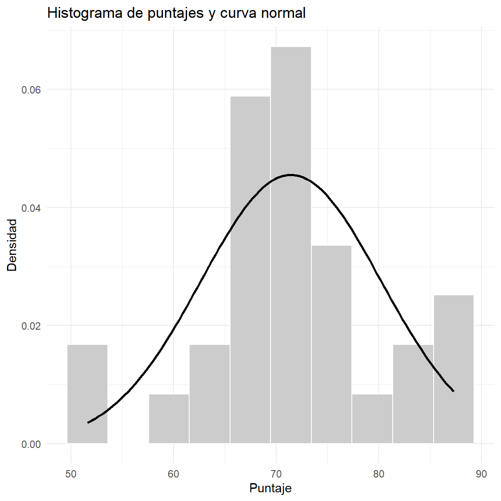
3.6.1 .Boxplot con ggplot2
Ver código
ggplot(datos_puntaje, aes(x ="", y = puntaje)) +geom_boxplot(width =0.25, outlier.shape =21,fill ="grey85", color ="grey25") +geom_jitter(width =0.07, alpha =0.65) +labs(title ="Diagrama de caja de los puntajes",x =NULL, y ="Puntaje") +theme_minimal()
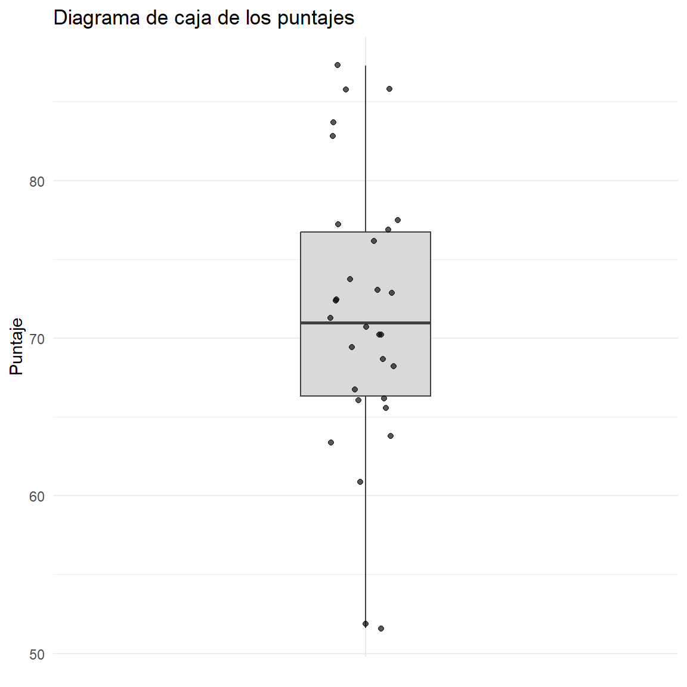
3.6.2 .Gráfico Q-Q normal con ggplot2
Ver código
ggplot(datos_puntaje, aes(sample = puntaje)) +stat_qq(size =2, alpha =0.8) +stat_qq_line(linewidth =1) +labs(title ="Gráfico Q-Q normal de los puntajes",x ="Cuantiles teóricos normales",y ="Cuantiles muestrales") +theme_minimal()
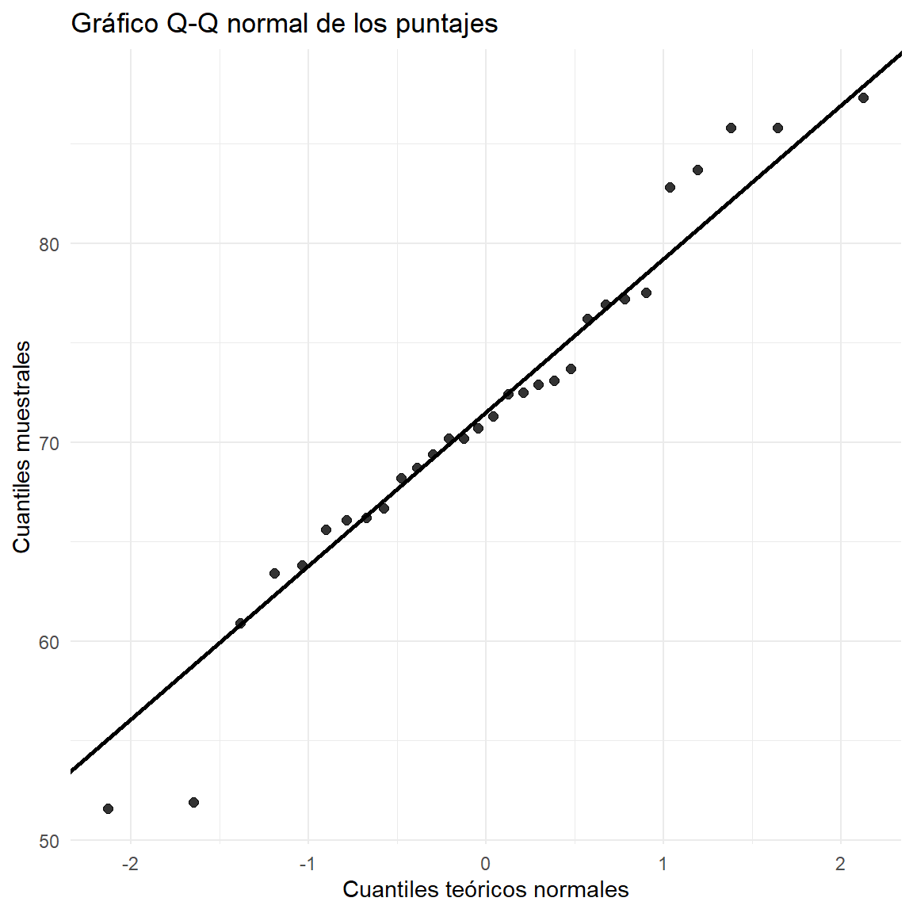
Interpretación del Q-Q plot: si los puntos siguen aproximadamente la línea de referencia, la normalidad resulta plausible. Una curvatura sistemática puede sugerir asimetría; desviaciones fuertes en los extremos pueden indicar colas pesadas, colas ligeras o valores atípicos. No se exige alineación perfecta, especialmente con muestras pequeñas.
3.6.3 .Q-Q plots por grupo
En comparaciones de medias independientes, conviene examinar la distribución dentro de cada grupo. El siguiente ejemplo utiliza los datos de calificaciones definidos anteriormente.
En un diseño antes-después, el supuesto de normalidad de la prueba t pareada se refiere a las diferencias.
Ver código
# Definir los datos pareados antes de calcular las diferencias.# Se repiten aquí intencionalmente para que este bloque sea autónomo# y pueda ejecutarse aunque se renderice de forma independiente.antes <-c(62, 70, 68, 75, 64, 71, 69, 66, 73, 65, 72, 67)despues <-c(68, 73, 72, 78, 69, 75, 70, 71, 76, 70, 75, 71)diferencias <- despues - antesdatos_diferencias <-data.frame(diferencias = diferencias)ggplot(datos_diferencias, aes(sample = diferencias)) +stat_qq(size =2) +stat_qq_line(linewidth =1) +labs(title ="Q-Q normal de las diferencias pareadas",x ="Cuantiles teóricos normales",y ="Diferencias observadas") +theme_minimal()
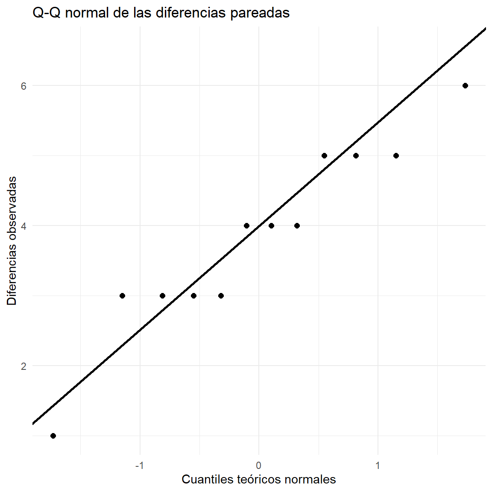
3.7 .Independencia y diseño
La independencia no se establece con Shapiro-Wilk ni con un boxplot: depende del diseño, del muestreo y de cómo se obtuvieron las observaciones. Mediciones repetidas sobre una misma persona no son independientes. En ese caso se usan métodos pareados o modelos que representen la dependencia.
3.8 .Igualdad de varianzas: prueba de Levene
Para comparar medias de grupos independientes, puede interesar evaluar si las varianzas son similares. La prueba de Levene es más robusta frente a desviaciones de normalidad que la prueba clásica de Bartlett.
Ver código
# install.packages("car") # ejecutar una sola vez si hace faltaif (requireNamespace("car", quietly =TRUE)) { car::leveneTest(calificacion ~ grupo, data = datos, center = median)}
Levene's Test for Homogeneity of Variance (center = median)
Df F value Pr(>F)
group 1 0.5302 0.4726
28
La hipótesis nula de Levene es que las varianzas poblacionales son iguales. Si su valor p es pequeño, hay evidencia contra la igualdad. Sin embargo, no es necesario seleccionar mecánicamente la prueba t agrupada o Welch con base en una prueba preliminar: la prueba de Welch suele ser una opción segura por defecto para dos grupos independientes.
4 .Prueba para una media con varianza poblacional conocida
4.1 .Cuándo se utiliza
Se contrasta una media poblacional \mu cuando la desviación estándar poblacional \sigma se considera conocida. En aplicaciones reales, conocer exactamente \sigma es poco frecuente. Se supone una muestra aleatoria independiente y normalidad poblacional para una inferencia exacta en muestras pequeñas; con muestras grandes, la aproximación normal puede ser razonable bajo condiciones apropiadas.
4.2 .Estadístico de prueba
Z=\frac{\bar X-\mu_0}{\sigma/\sqrt n}.
Donde \bar X es la media muestral, \mu_0 el valor de referencia, \sigma la desviación estándar poblacional conocida y n el tamaño de la muestra.
Para una prueba bilateral, se rechaza H_0 si |Z|>z_{1-\alpha/2}. En una prueba de cola derecha se rechaza si Z>z_{1-\alpha}; en una de cola izquierda, si Z<z_\alpha.
4.3 .Ejemplo resuelto en R
Una institución afirma que el puntaje medio es 70 puntos. Se toma una muestra de 36 estudiantes; la media observada es 73 y se conoce, por información histórica confiable, que \sigma=9. Contrastar a nivel 5% si la media difiere de 70.
Z p_valor Z_critico IC_inferior IC_superior
2.00000000 0.04550026 1.95996398 70.06005402 75.93994598
Conclusión: se rechaza H_0 si el valor p es menor que 0.05. El intervalo de confianza del 95% proporciona el rango de valores compatibles con los datos bajo el modelo. En este ejemplo, el estadístico es Z=2, y el valor p bilateral es aproximadamente 0.0455; por tanto, hay evidencia estadística de que la media difiere de 70 al 5%.
Nota:t.test() no permite especificar una desviación estándar poblacional conocida. Por eso, el cálculo se realiza directamente con la distribución normal.
5 .Prueba para una media con varianza poblacional desconocida
5.1 .Distribución t de Student
Cuando \sigma es desconocida, se estima mediante la desviación estándar muestral s. Si la población es normal y las observaciones son independientes, el estadístico sigue una distribución t de Student con n-1 grados de libertad:
t=\frac{\bar X-\mu_0}{s/\sqrt n},\qquad gl=n-1.
La distribución t tiene colas más pesadas que la normal y considera la incertidumbre adicional por estimar la desviación estándar.
5.2 .Supuestos y diagnóstico
Variable cuantitativa.
Muestra aleatoria y observaciones independientes.
Normalidad aproximada de la población para inferencia exacta en muestras pequeñas.
Ausencia de valores extremos muy influyentes.
Con muestras mayores, la prueba suele ser robusta ante desviaciones moderadas, pero la asimetría fuerte y los valores extremos siguen siendo importantes.
5.3 .Ejemplo con datos muestrales
Una muestra de 12 estudiantes presenta los siguientes puntajes. Se desea contrastar si la media poblacional difiere de 70.
hist(x, probability =TRUE, main ="Puntajes muestrales", xlab ="Puntaje")
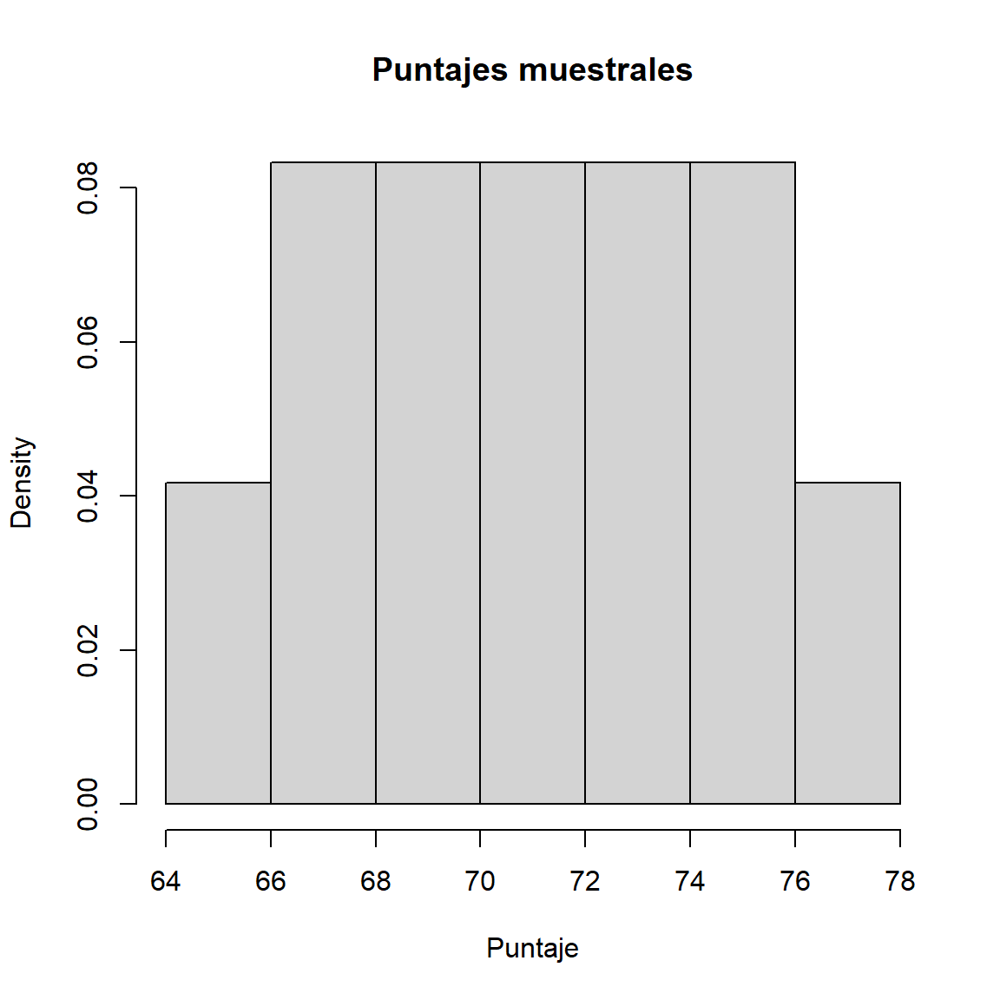
Ver código
qqnorm(x); qqline(x, col ="red", lwd =2)
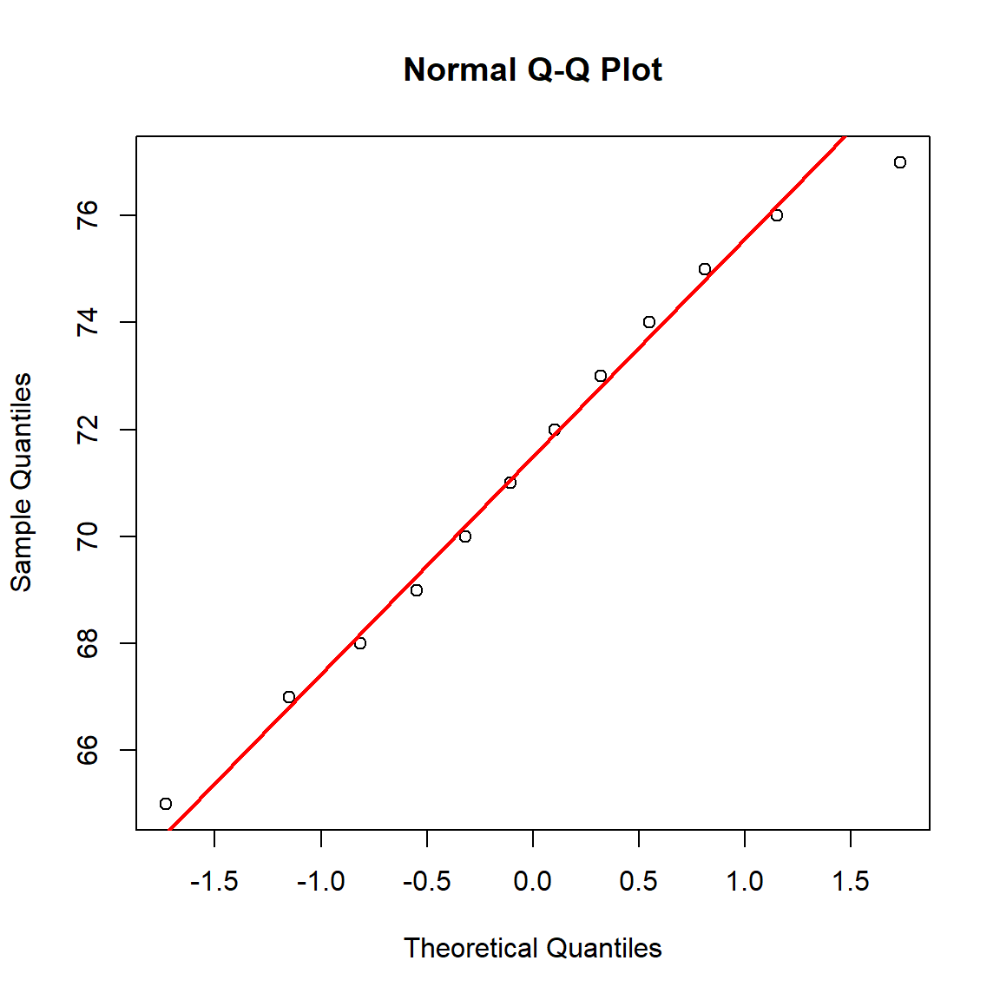
Ver código
shapiro.test(x)
Shapiro-Wilk normality test
data: x
W = 0.97756, p-value = 0.972
Hipótesis bilateral:
H_0:\mu=70,\qquad H_1:\mu\ne70.
Ver código
resultado_t <-t.test(x, mu =70, alternative ="two.sided",conf.level =0.95)resultado_t
One Sample t-test
data: x
t = 1.3077, df = 11, p-value = 0.2176
alternative hypothesis: true mean is not equal to 70
95 percent confidence interval:
69.03227 73.80107
sample estimates:
mean of x
71.41667
t.test() informa la t observada, grados de libertad, valor p, intervalo de confianza y media estimada. Si p<0.05, se rechaza H_0; de lo contrario, no se rechaza.
Para una hipótesis unilateral, se cambia alternative por "greater" o "less". La dirección debe establecerse antes de analizar los resultados.
6 .Prueba de hipótesis para una proporción poblacional
6.1 .Parámetro y aproximación normal
Sea p la proporción poblacional de individuos que poseen una característica. La proporción muestral es:
\hat p=\frac{x}{n},
donde x es el número de casos con la característica y n el tamaño de la muestra.
Para contrastar H_0:p=p_0, el estadístico aproximado es:
Z=\frac{\hat p-p_0}{\sqrt{p_0(1-p_0)/n}}.
La aproximación normal requiere un número suficiente de éxitos y fracasos esperados bajo H_0. Como regla orientativa, se suele revisar que np_0 y n(1-p_0) sean al menos 5 o, de manera más conservadora, 10. Si la muestra es pequeña o los conteos son escasos, es preferible considerar una prueba binomial exacta.
6.2 .Ejemplo educativo
Una universidad sostiene que al menos el 60% de sus estudiantes está satisfecho con la modalidad virtual. En una muestra de 150 estudiantes, 102 declaran estar satisfechos. Para evaluar si la proporción supera el 60%:
proporcion_muestral Z p_valor
0.68000000 2.00000000 0.02275013
También puede usarse una prueba binomial exacta:
Ver código
binom.test(x, n, p = p0, alternative ="greater", conf.level =0.95)
Exact binomial test
data: x and n
number of successes = 102, number of trials = 150, p-value = 0.02649
alternative hypothesis: true probability of success is greater than 0.6
95 percent confidence interval:
0.6117058 1.0000000
sample estimates:
probability of success
0.68
La prueba exacta es válida sin recurrir a la aproximación normal, aunque puede ser conservadora. Para proporciones, no debe confundirse el intervalo de confianza elegido con el contraste unilateral: el método y la cola deben coincidir con la pregunta planteada.
7 .Prueba de hipótesis para una varianza poblacional
7.1 .Distribución chi-cuadrado
Para una población normal, la hipótesis sobre la varianza \sigma^2 puede evaluarse mediante:
\chi^2=\frac{(n-1)s^2}{\sigma_0^2},\qquad gl=n-1.
Bajo H_0:\sigma^2=\sigma_0^2, el estadístico sigue una distribución chi-cuadrado con n-1 grados de libertad. Esta prueba es muy sensible a la falta de normalidad; la inspección gráfica y el conocimiento del proceso de muestreo son especialmente importantes.
7.2 .Ejemplo
Se desea evaluar si la varianza poblacional de los puntajes es distinta de 64 puntos cuadrados. Se utiliza una muestra de 15 estudiantes.
Ver código
x_var <-c(68, 72, 75, 69, 71, 77, 65, 73, 70, 74, 67, 76, 80, 66, 72)n <-length(x_var)s2 <-var(x_var)sigma02 <-64alpha <-0.05qqnorm(x_var, main ="Q-Q plot para evaluar normalidad")qqline(x_var, col ="red", lwd =2)
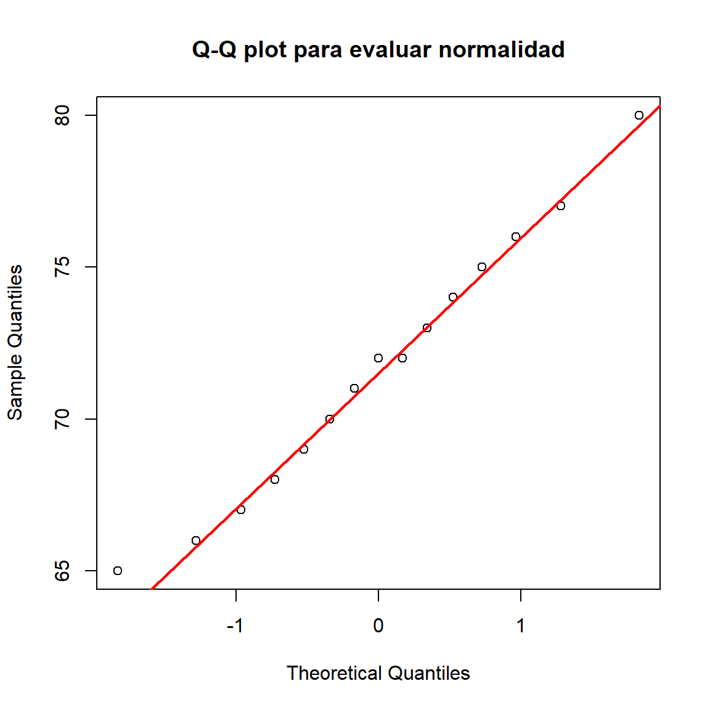
Ver código
shapiro.test(x_var)
Shapiro-Wilk normality test
data: x_var
W = 0.98315, p-value = 0.9865
La prueba bilateral utiliza ambas colas de la distribución chi-cuadrado. Si p<\alpha, se rechaza la hipótesis de varianza igual a 64. La interpretación es válida bajo el supuesto de normalidad poblacional.
8 .Prueba de diferencia de medias pareadas
8.1 .Diseño pareado
Se utiliza cuando cada unidad se mide dos veces (por ejemplo, antes y después de una intervención) o cuando las observaciones se emparejan de forma justificada. No se deben tratar las mediciones de una misma persona como muestras independientes.
Se define la diferencia por pareja como D_i=X_{i,\text{después}}-X_{i,\text{antes}}. La prueba equivale a una prueba t de una muestra aplicada a las diferencias:
Paired t-test
data: despues and antes
t = 9.9311, df = 11, p-value = 7.921e-07
alternative hypothesis: true mean difference is not equal to 0
95 percent confidence interval:
2.983770 4.682896
sample estimates:
mean difference
3.833333
Si el valor p es pequeño, existe evidencia de una diferencia media distinta de cero. Si las diferencias son muy asimétricas o contienen valores extremos importantes, se puede considerar la prueba de rangos con signo de Wilcoxon (wilcox.test(despues, antes, paired = TRUE)), teniendo presente que su interpretación no es siempre una prueba de diferencia de medias.
9 .Diferencia de medias independientes con varianzas iguales
9.1 .Modelo y estadístico
Se comparan dos grupos independientes. Bajo el supuesto de varianzas poblacionales iguales, se estima una varianza común agrupada:
Grupos independientes y observaciones independientes dentro de cada grupo.
Variable cuantitativa.
Normalidad aproximada dentro de cada grupo para inferencia exacta en muestras pequeñas.
Varianzas poblacionales iguales.
El test de Levene puede informar sobre la homogeneidad, pero no garantiza que el supuesto sea verdadero. Si la igualdad de varianzas no está bien sustentada, la prueba de Welch suele ser preferible.
par(mfrow =c(1, 2))qqnorm(metodo_A, main ="Q-Q Método A"); qqline(metodo_A, col ="red")qqnorm(metodo_B, main ="Q-Q Método B"); qqline(metodo_B, col ="red")
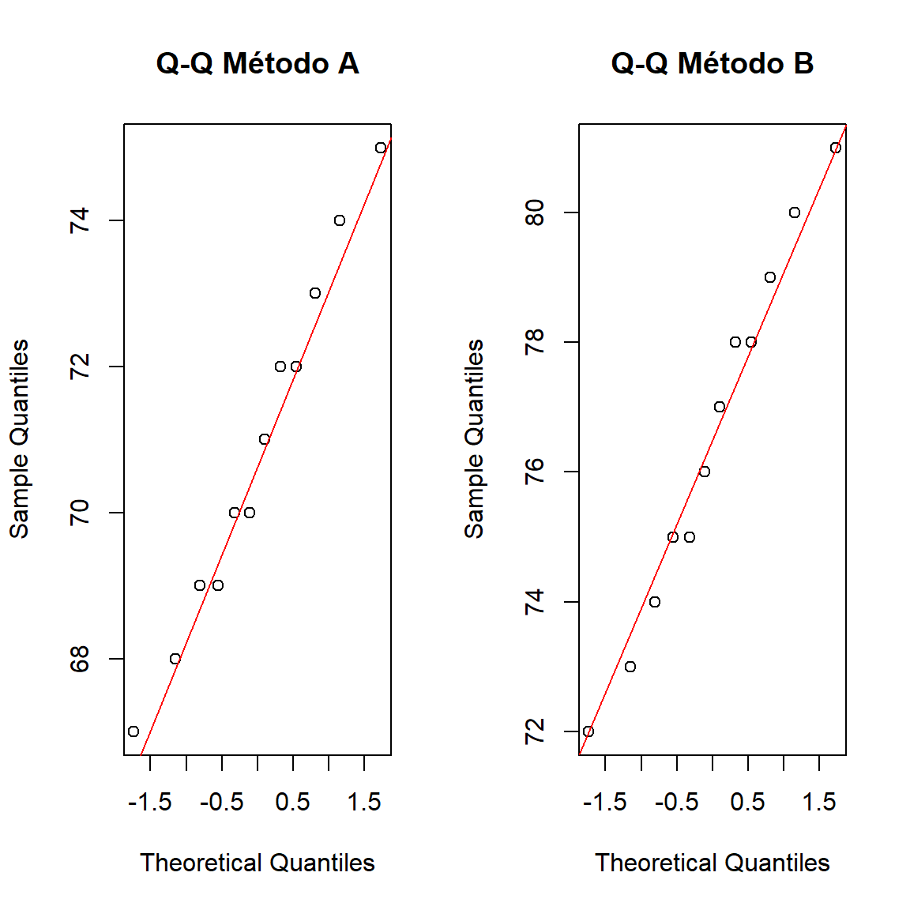
Ver código
par(mfrow =c(1, 1))shapiro.test(metodo_A)
Shapiro-Wilk normality test
data: metodo_A
W = 0.97581, p-value = 0.9612
Ver código
shapiro.test(metodo_B)
Shapiro-Wilk normality test
data: metodo_B
W = 0.97538, p-value = 0.9583
Hipótesis bilateral:
H_0:\mu_1-\mu_2=0,\qquad H_1:\mu_1-\mu_2\ne0.
Ver código
# Prueba de Levene, si está instalado el paquete carif (requireNamespace("car", quietly =TRUE)) { grupo2 <-factor(c(rep("A", length(metodo_A)), rep("B", length(metodo_B)))) puntajes2 <-c(metodo_A, metodo_B)print(car::leveneTest(puntajes2 ~ grupo2, center = median))}
Levene's Test for Homogeneity of Variance (center = median)
Df F value Pr(>F)
group 1 0.3607 0.5543
22
Two Sample t-test
data: metodo_A and metodo_B
t = -5.2692, df = 22, p-value = 2.752e-05
alternative hypothesis: true difference in means is not equal to 0
95 percent confidence interval:
-7.896987 -3.436346
sample estimates:
mean of x mean of y
70.83333 76.50000
var.equal = TRUE solicita la prueba t con varianza agrupada. La conclusión debe acompañarse de la diferencia estimada entre medias y su intervalo de confianza.
10 .Diferencia de medias independientes con varianzas diferentes: Welch
10.1 .Estadístico de Welch
La prueba t de Welch no exige igualdad de varianzas:
Welch Two Sample t-test
data: metodo_A and metodo_B
t = -5.2692, df = 21.579, p-value = 2.923e-05
alternative hypothesis: true difference in means is not equal to 0
95 percent confidence interval:
-7.899515 -3.433818
sample estimates:
mean of x mean of y
70.83333 76.50000
En R, var.equal = FALSE es el valor predeterminado. La prueba de Welch suele funcionar bien incluso cuando las varianzas son similares y es una opción general recomendable para dos grupos independientes.
10.3 ¿Cuál prueba seleccionar?
Característica
t agrupada
Welch
Grupos independientes
Sí
Sí
Supone varianzas iguales
Sí
No
Grados de libertad
n_1+n_2-2
Aproximados
En R
var.equal = TRUE
var.equal = FALSE
No se recomienda decidir exclusivamente a partir de un test de igualdad de varianzas: considere el diseño, tamaños de grupo, dispersión y robustez del procedimiento.
11 .Diferencia de dos proporciones independientes
11.1 .Parámetros e hipótesis
Sean p_1 y p_2 las proporciones poblacionales de dos grupos independientes. El interés puede estar en evaluar:
H_0:p_1-p_2=0,\qquad H_1:p_1-p_2\ne0.
Las proporciones muestrales son \hat p_1=x_1/n_1 y \hat p_2=x_2/n_2.
Para la prueba z clásica bajo H_0:p_1=p_2, se utiliza la proporción combinada:
p1 p2 diferencia Z p_valor
0.7000000 0.6000000 0.1000000 1.5905974 0.1117002
La prueba de Pearson para una tabla 2 × 2 ofrece una alternativa equivalente asintóticamente a la prueba z de dos proporciones sin corrección de continuidad:
Ver código
tabla <-matrix(c(x1, n1-x1, x2, n2-x2),nrow =2, byrow =TRUE,dimnames =list(Grupo =c("A", "B"),Respuesta =c("Satisfecho", "No satisfecho")))tabla
Respuesta
Grupo Satisfecho No satisfecho
A 84 36
B 66 44
Ver código
prop.test(x =c(x1, x2), n =c(n1, n2),correct =FALSE, conf.level =0.95)
2-sample test for equality of proportions without continuity correction
data: c(x1, x2) out of c(n1, n2)
X-squared = 2.53, df = 1, p-value = 0.1117
alternative hypothesis: two.sided
95 percent confidence interval:
-0.022898 0.222898
sample estimates:
prop 1 prop 2
0.7 0.6
prop.test() proporciona una prueba aproximada y un intervalo de confianza para las proporciones o su diferencia, según el caso. Para tablas con conteos esperados pequeños, examine:
Ver código
chisq.test(tabla)$expected
Respuesta
Grupo Satisfecho No satisfecho
A 78.26087 41.73913
B 71.73913 38.26087
Ver código
fisher.test(tabla)
Fisher's Exact Test for Count Data
data: tabla
p-value = 0.1282
alternative hypothesis: true odds ratio is not equal to 1
95 percent confidence interval:
0.8694003 2.7873703
sample estimates:
odds ratio
1.552505
La prueba exacta de Fisher es una alternativa para tablas 2 × 2 cuando la aproximación chi-cuadrado puede ser inadecuada.
12 .Gráficos de las regiones críticas
Los gráficos ayudan a visualizar la región de rechazo, pero la decisión formal debe basarse en el estadístico, el valor p y el nivel de significación previamente elegido.
Independencia; normalidad aproximada en muestras pequeñas
Una proporción
Binomial exacta o Z aproximada
binom.test() / cálculo Z
Ensayos binomiales independientes
Una varianza
Chi-cuadrado
pchisq()
Población normal
Diferencia pareada
t pareada
t.test(x, y, paired=TRUE)
Normalidad aproximada de las diferencias
Dos medias, varianzas iguales
t agrupada
t.test(x, y, var.equal=TRUE)
Independencia, normalidad aproximada y varianzas iguales
Dos medias, varianzas diferentes
t de Welch
t.test(x, y)
Independencia y normalidad aproximada en muestras pequeñas
Dos proporciones independientes
Z / chi-cuadrado
prop.test()
Grupos independientes y conteos suficientes
14 .Recomendaciones para informar resultados
Un informe técnico debe incluir:
Pregunta y parámetro: qué se quiere estimar o contrastar.
Hipótesis y nivel\alpha: indicar si el contraste es bilateral o unilateral.
Descripción de datos: tamaño muestral, media y desviación estándar, o conteos y proporciones.
Evaluación de supuestos: describir gráficos y pruebas relevantes; no limitarse a decir “se cumple normalidad” por un valor p.
Resultado inferencial: estadístico, grados de libertad cuando corresponda, valor p e intervalo de confianza.
Conclusión contextual: responder a la pregunta sin afirmar causalidad si el diseño no la permite.
Magnitud práctica: informar diferencia estimada y, cuando corresponda, un tamaño del efecto.
Ejemplo de redacción:
Se comparó la media de puntajes entre dos grupos independientes mediante la prueba t de Welch, sin asumir igualdad de varianzas. Se reportaron la diferencia de medias, el intervalo de confianza del 95%, el estadístico t, los grados de libertad aproximados y el valor p. La conclusión se formuló con respecto a la pregunta de investigación y no únicamente con base en la significación estadística.
15 .Paquetes de R útiles
Las pruebas principales pueden ejecutarse con funciones de R base: t.test(), binom.test(), prop.test(), shapiro.test() y chisq.test(). Para gráficos más flexibles se utiliza ggplot2; para Levene se utiliza el paquete car.
Ver código
# Instalar una sola vez si hace falta:# install.packages(c("ggplot2", "car"))library(ggplot2)# Boxplot de las calificaciones por grupoggplot(datos, aes(x = grupo, y = calificacion)) +geom_boxplot(aes(fill = grupo), show.legend =FALSE) +geom_jitter(width =0.08, alpha =0.6) +labs(title ="Calificaciones por grupo",x ="Grupo", y ="Calificación") +theme_minimal()
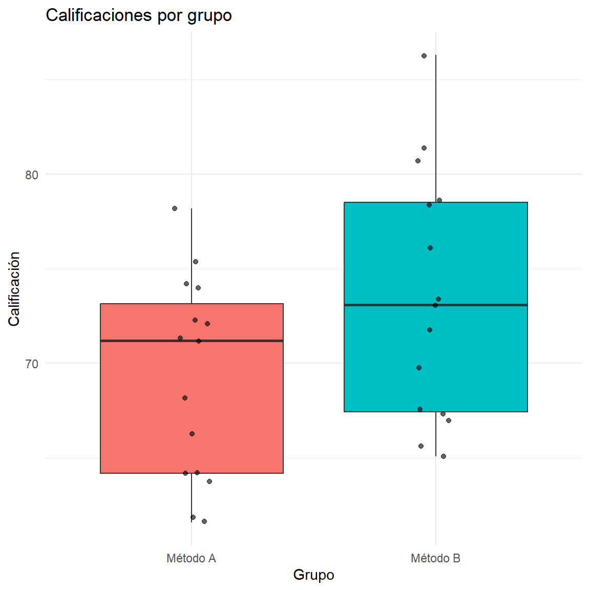
Ver código
# Prueba de Levene:# car::leveneTest(calificacion ~ grupo, data = datos, center = median)
Los gráficos deben interpretarse junto con el diseño y los supuestos. La normalidad de los datos no se decide únicamente por una prueba de Shapiro-Wilk ni por un Q-Q plot; se valora el conjunto de evidencias.
16 .Actividad de aplicación
Para cada situación, formule H_0 y H_1, identifique el procedimiento, examine los supuestos, ejecute el análisis en R y redacte una conclusión contextual.
Una muestra de estudiantes se utiliza para determinar si la media de calificaciones difiere de 3.5 sobre 5, con varianza poblacional desconocida.
Una entidad afirma que el 70% de los trámites se resuelve dentro del plazo. En una muestra de 100 trámites, 62 se resolvieron a tiempo. Evalúe la afirmación con una prueba apropiada.
Se mide el tiempo de atención a los mismos usuarios antes y después de una mejora. Determine si el tiempo medio cambió.
Se comparan los puntajes de dos cursos independientes. Justifique si utilizaría Welch o una prueba t agrupada.
Se compara la proporción de estudiantes satisfechos en dos programas académicos independientes.
Se desea contrastar si la varianza de los tiempos de atención es igual a un valor establecido. Explique por qué la normalidad es importante para esta prueba.
16.1 Consideración final
Los procedimientos paramétricos no deben elegirse de forma automática. La elección depende del parámetro, el diseño, la independencia, la distribución de los datos, los tamaños muestrales y el objetivo científico. Los gráficos complementan las pruebas analíticas y el criterio del analista; no los reemplazan.
17 .Paquetes de R específicos para las pruebas de hipótesis
R incluye funciones estadísticas para ejecutar las pruebas de hipótesis más comunes. Por tanto, no es obligatorio instalar paquetes adicionales para realizar los análisis principales de este documento. Los paquetes complementarios amplían las opciones de diagnóstico, visualización, presentación de resultados y cálculo de tamaños del efecto.
17.1 .Funciones de R base para las pruebas principales
Las funciones que se presentan en la siguiente tabla pertenecen al paquete stats, que se instala junto con R.
Procedimiento
Función
Uso
Media con varianza poblacional conocida
pnorm(), qnorm()
Calcular valores p y valores críticos para el estadístico Z, calculado con la fórmula correspondiente
Media con varianza desconocida
t.test()
Prueba t de una muestra
Proporción poblacional
prop.test(), binom.test()
Prueba aproximada o binomial exacta
Varianza poblacional
pchisq(), qchisq()
Calcular valores p y valores críticos para el estadístico chi-cuadrado
Diferencia de medias pareadas
t.test(paired = TRUE)
Comparación de mediciones emparejadas
Dos medias independientes, varianzas iguales
t.test(var.equal = TRUE)
Prueba t con varianza agrupada
Dos medias independientes, varianzas diferentes
t.test()
Prueba t de Welch, predeterminada en R
Diferencia de dos proporciones
prop.test()
Comparación de proporciones
Tabla de contingencia 2 × 2
fisher.test()
Prueba exacta de Fisher
Normalidad
shapiro.test()
Prueba de Shapiro-Wilk
Nota: las funciones pnorm() y qnorm() no ejecutan por sí solas una prueba Z de una media con desviación estándar poblacional conocida. Se calcula el estadístico con la fórmula y luego se obtiene el valor p o el valor crítico con dichas funciones. De manera similar, la prueba de una varianza poblacional se implementa calculando el estadístico chi-cuadrado y su valor p.
17.2 .Paquetes complementarios recomendados
17.2.1ggplot2: visualización estadística
Se utiliza para elaborar histogramas, diagramas de caja, gráficos Q-Q y comparaciones gráficas entre grupos.
Ver código
# Instalar una sola vez, si es necesario:# install.packages("ggplot2")library(ggplot2)# Boxplot con puntos observados por grupoggplot(datos, aes(x = grupo, y = calificacion)) +geom_boxplot(aes(fill = grupo), show.legend =FALSE) +geom_jitter(width =0.08, alpha =0.6) +labs(title ="Distribución de calificaciones por método",x ="Método",y ="Calificación" ) +theme_minimal()
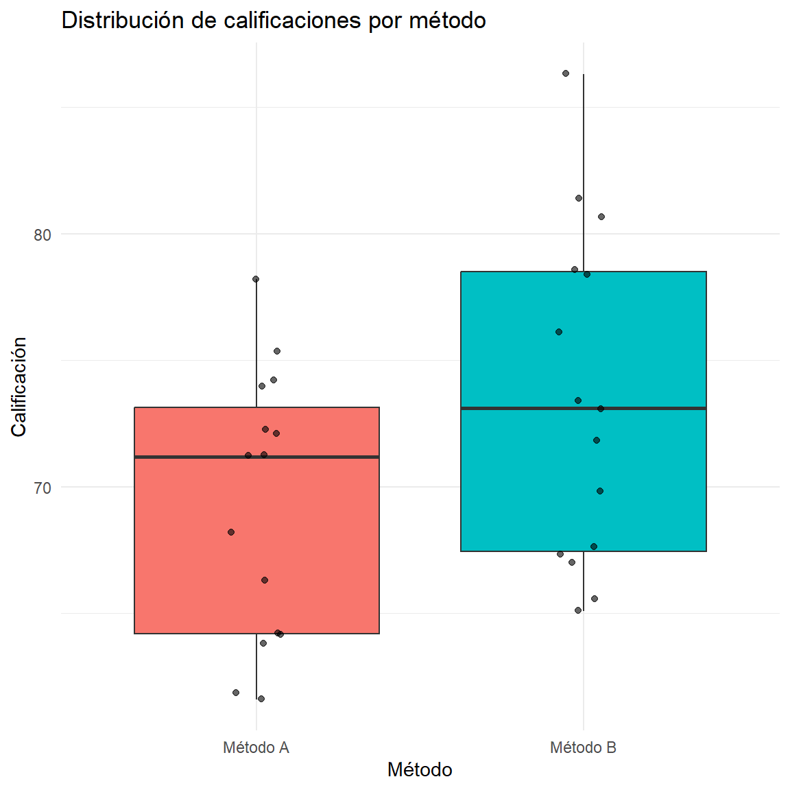
17.2.2car: homogeneidad de varianzas
El paquete car incluye leveneTest(), que permite evaluar si las varianzas de varios grupos son compatibles con la hipótesis de igualdad.
Ver código
# Instalar una sola vez, si es necesario:# install.packages("car")if (requireNamespace("car", quietly =TRUE)) { car::leveneTest( calificacion ~ grupo,data = datos,center = median )}
Levene's Test for Homogeneity of Variance (center = median)
Df F value Pr(>F)
group 1 0.5302 0.4726
28
La hipótesis nula de Levene establece que las varianzas de los grupos son iguales. Un valor p pequeño aporta evidencia contra esa hipótesis. Esta prueba debe interpretarse junto con los gráficos, el diseño y el conocimiento del problema. Para dos grupos independientes, la prueba de Welch suele ser una opción razonable sin necesidad de decidir primero mediante una prueba de igualdad de varianzas.
17.2.3rstatix: pruebas y resultados ordenados
rstatix ofrece una interfaz práctica para realizar pruebas comunes y organizar sus resultados.
Ver código
# Instalar una sola vez, si es necesario:# install.packages("rstatix")if (requireNamespace("rstatix", quietly =TRUE)) {# Prueba t para dos grupos independientes rstatix::t_test( datos, calificacion ~ grupo,var.equal =FALSE,detailed =TRUE )}
El valor p indica la evidencia contra la hipótesis nula, pero no cuantifica por sí solo la magnitud o relevancia práctica de una diferencia. El paquete effectsize ofrece medidas como la d de Cohen para ciertos diseños.
Ver código
# Instalar una sola vez, si es necesario:# install.packages("effectsize")if (requireNamespace("effectsize", quietly =TRUE)) { effectsize::cohens_d( calificacion ~ grupo,data = datos,pooled_sd =FALSE )}
Cohen's d | 95% CI
-------------------------
-0.71 | [-1.44, 0.04]
- Estimated using un-pooled SD.
La elección de una medida de tamaño del efecto debe corresponder al diseño y a la pregunta de investigación. En comparaciones de proporciones, pueden ser más apropiadas medidas como la diferencia de proporciones, el riesgo relativo o la razón de momios.
17.3 .Paquetes para pruebas adicionales de normalidad
El paquete nortest incluye pruebas adicionales, como Anderson-Darling y Lilliefors. Estas pruebas pueden complementar, pero no reemplazan, el examen de los histogramas y gráficos Q-Q.
Ver código
# Instalar una sola vez, si es necesario:# install.packages("nortest")if (requireNamespace("nortest", quietly =TRUE)) { nortest::ad.test(puntaje) nortest::lillie.test(puntaje)}
Lilliefors (Kolmogorov-Smirnov) normality test
data: puntaje
D = 0.097478, p-value = 0.6613
El paquete lawstat también proporciona procedimientos para evaluar la homogeneidad de varianzas. No es necesario instalarlo si las funciones que se requieren ya están disponibles en los paquetes que utiliza el proyecto.
17.4 .Instalación de los paquetes complementarios
Para instalar los paquetes opcionales utilizados en esta sección, ejecute una sola vez en la consola de R:
Ver código
# Ejecutar una sola vez; no es necesario repetir en cada renderizado.# install.packages(c(# "ggplot2",# "car",# "rstatix",# "broom",# "effectsize",# "nortest",# "lawstat"# ))
Una vez instalados, puede cargar un paquete con library(nombre_paquete) o llamar a una función mediante paquete::funcion(). La segunda opción ayuda a identificar claramente de dónde procede cada función.
17.5 .Recomendación para este documento Quarto
Para mantener el proyecto reproducible y fácil de ejecutar:
Utilice stats para las pruebas de hipótesis principales.
Utilice ggplot2 para histogramas, boxplots y gráficos Q-Q.
Utilice car cuando necesite la prueba de Levene.
Utilice broom si desea presentar resultados en tablas ordenadas.
Utilice effectsize cuando el análisis requiera cuantificar la magnitud de una diferencia.
Utilice rstatix o nortest solo si necesita sus funciones específicas.
No es necesario instalar ni cargar todos estos paquetes para cada análisis. Mantenga únicamente las dependencias que realmente utilice y recuerde que la evaluación de supuestos debe considerar el diseño, la independencia, los gráficos y la evidencia analítica.